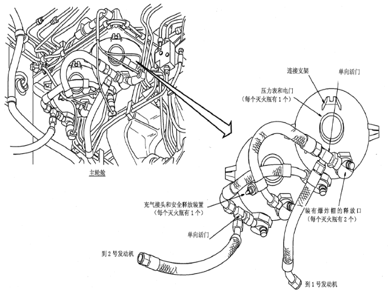

发动机灭火瓶内装有灭火用的Halon（卤代烃）灭火剂。

发动机灭火瓶是球形的。在环境温度为70F（21℃）时，灭火瓶内装有压力为800 Psi的Halon（卤代烃）灭火剂和氮气。下列是发动机每个灭火瓶的部件：
每个灭火瓶有两个释放组件（爆炸帽），连接在释放管路上。释放管路内装有单向活门，并将来自每个灭火瓶的灭火剂送到左右发动机。
两个发动机灭火瓶位于主轮舱内。装在主轮舱左上角的支架上。
| ||||
当拉出并转动发动机灭火警告电门，将引爆爆炸帽。爆炸帽使灭火瓶口的密封破裂。使灭火瓶释放Halon（卤代烃）灭火剂。
灭火剂从灭火瓶流到选择的发动机舱。Halon（卤代烃）灭火剂可用从任一灭火瓶或两个灭火瓶流到同一个发动机。
如果灭火瓶的温度增加到266F（130℃），安全释放口破裂。释放灭火剂到主轮舱。